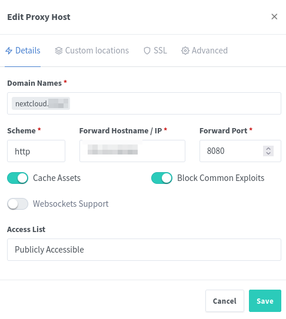
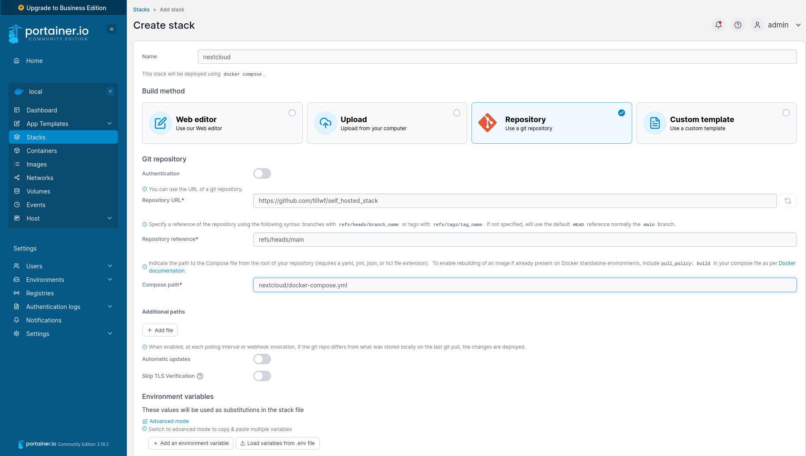

3.5 Setup server with self-hosted services using Docker
This tutorial works for an Ubuntu 24.04 LTS Server version on an OVH Eco server.
3.5.1 Setup SSH
# To adapt
export USERNAME=username
export SSHPORT=1234
# Add user and give him sudo rights
sudo adduser $USERNAME
sudo usermod -aG sudo $USERNAME
# Allow connection only on a specific port
sudo ufw allow $SSHPORT/tcp
# Allow ports for Nextcloud/Portainer/NPM
sudo ufw allow 8080
sudo ufw allow 9443
sudo ufw allow 81
sudo ufw allow https
sudo ufw enableEdit the file /etc/ssh/sshd_config (replace the variable manually):
Port $SSHPORT
PasswordAuthentication yes
PermitEmptyPasswords no
PermitRootLogin no
PubkeyAuthentication no
AllowUsers $USERNAME
KbdInteractiveAuthentication yes # Change from no to yesDisable ssh.socket and Enable ssh.service
Since ssh.socket can override custom port settings, it may be preventing SSH from listening on the correct port. To disable socket activation and rely only on the regular SSH service, do the following:
sudo systemctl disable ssh.socket
sudo systemctl stop ssh.socket
sudo systemctl enable ssh
sudo systemctl start sshThis ensures that SSH will run as a service and listen on your specified port directly.
3.5.4 Install Docker
sudo apt update
sudo apt install apt-transport-https ca-certificates curl software-properties-common
curl -fsSL https://download.docker.com/linux/ubuntu/gpg | sudo gpg --dearmor -o /usr/share/keyrings/docker-archive-keyring.gpg
echo "deb [arch=$(dpkg --print-architecture) signed-by=/usr/share/keyrings/docker-archive-keyring.gpg] https://download.docker.com/linux/ubuntu $(lsb_release -cs) stable" | sudo tee /etc/apt/sources.list.d/docker.list > /dev/null
sudo apt update
sudo apt install docker-ce docker-composeGive the user the rights to run docker:
sudo usermod -aG docker ${USER}
sudo systemctl restart dockerLog out then log in or restart the server.
3.5.5 Install Portainer
3.5.5.1 Clone docker compose files
git clone https://github.com/tillwf/self_hosted_stackand go to the folder portainer.
Run the container
docker-compose up -dThen go to this page https://ip-adress:9443/#!/init/admin and setup the password.
Add the service to systemd
As we want this service to be started whenever the server is restarted, we will add portainer as a service. Edit the file:
sudo vim /etc/systemd/system/portainer.servicelike that:
[Unit]
Description=Portainer
Requires=docker.service
After=docker.service
[Service]
Restart=always
User=<username>
Group=docker
WorkingDirectory=<path to portainer docker compose>
# Shutdown container (if running) when unit is stopped
ExecStartPre=/usr/bin/docker-compose -f docker-compose.yml down
# Start container when unit is started
ExecStart=/usr/bin/docker-compose -f docker-compose.yml up
# Stop container when unit is stopped
ExecStop=/usr/bin/docker-compose -f docker-compose.yml down
[Install]
WantedBy=multi-user.targetand then run:
sudo systemctl enable portainer.service
sudo systemctl start portainer.service3.5.6 Install Ngnix Proxy Manager
Create a new stack with the proper docker-compose.yml and the environment variables.
Then setup your account by going to http://ip-adress:81 and change your credential. The default values are:
admin@example.com
changeme3.5.6.1 Setup you subdomain
As an example, for nextcloud, first you will need to create a A entry in to your DNS Zone
nextcloud IN A <ip adress>Then in NPM Go to Hosts → Proxy hosts and create a new one:
- Tab
Detail: CheckCache assets,block common exploitsandweb sockets support; - Tab
SSL:Force SSL,HTTP/2andHSTSenabled;

For Nextcloud, add the following lines to advanced tab, custom nginx configuration:
proxy_set_header Host $host;
proxy_set_header X-Forwarded-Proto $scheme;
proxy_set_header X-Real-IP $remote_addr;
proxy_set_header X-Forwarded-For $proxy_add_x_forwarded_for;
proxy_max_temp_file_size 16384m;
client_max_body_size 0;
location = /.well-known/carddav {
return 301 $scheme://$host:$server_port/remote.php/dav;
}
location = /.well-known/caldav {
return 301 $scheme://$host:$server_port/remote.php/dav;
}3.5.7 Setup Nextcloud
Use the Repository method to deploy your stack:

3.5.7.1 Change config.php
Find the id of the nextcloud-nc image and run bash in it:
docker ps
docker exec -it <container-name-or-id> bashEdit the file /var/www/html/config/config.php:
apt-get update
apt-get install vim
vim /var/www/html/config/config.php'trusted_domains' =>
array (
0 => '{nextcloud.domain.com}',
),
'redis' =>
array (
'host' => 'redis',
'port' => 6379,
'password' => '{redis_password}',
),
'filelocking.enabled' => true,
'memcache.locking' => '\OC\Memcache\Redis',
'trashbin_retention_obligation' => '30, 60',
'overwriteprotocol' => 'https', # Only when https is enabled
'log_type' => 'file',
'logfile' => 'nextcloud.log',3.5.7.2 Setup the data folder
If you want to have access to your data folder in your HOME do:
cd $HOME
mkdir nextcloud_data
touch nextcloud_data/.ocdata
sudo chown -R www-data:www-data nextcloud_data
sudo chmod -R 0770 nextcloud_dataSetup Cron for the news app
For the news app, to enable the cron update add this line to your local crontab:
/usr/bin/docker exec -u www-data nextcloud-nc-1 php -f /var/www/html/cron.phpInstall dependencies for extensions
Adding local external storage requires smbclient and to use grauphel you need the
oauth package of php. To install those requirements during the deployement of
the container you need to add a Dockerfile in the folder of your docker compose
which will be like this:
FROM nextcloud:apache
RUN apt-get update; \
apt-get install -y procps smbclient libsmbclient-dev; \
pecl install smbclient; \
docker-php-ext-enable smbclient; \
apt install -y libpcre3-dev; \
pecl install oauth; \
docker-php-ext-enable oauth; \
rm -rf /var/lib/apt/lists/*As this file specify the image used (nexcloud:apache) you have to remove the
image line in your docker-compose.yml otherwise it will use the version of
the docker compose and will not apply the Dockerfile.
3.5.8 FAQ
How to completetely clear one of your container
Print current docker images:
docker imagesRemove the wanted images
docker rmi <image_name>List the docker volumes
docker volume lsRemove the wanted volume
docker volume rm <volume_name>Kill everything:
removecontainers() {
docker stop $(docker ps -aq)
docker rm $(docker ps -aq)
}
armageddon() {
removecontainers
docker network prune -f
docker rmi -f $(docker images --filter dangling=true -qa)
docker volume rm $(docker volume ls --filter dangling=true -q)
docker rmi -f $(docker images -qa)
}